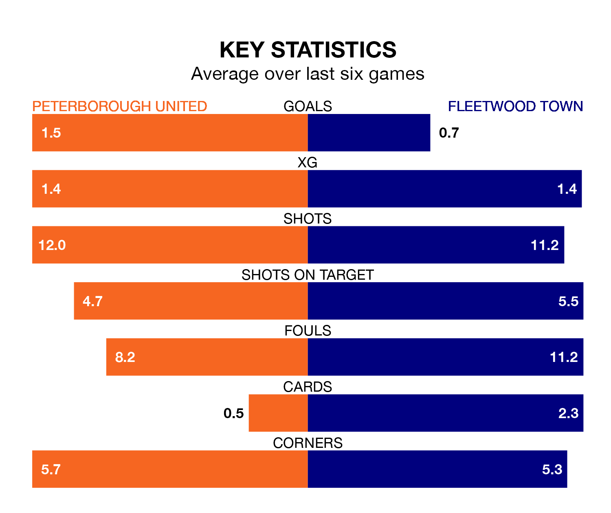

Struggling Fleetwood Town face Peterborough United away at the Weston Homes Stadium on Tuesday looking to build on a win in their last league outing.
After securing all three points with a 2-0 victory over Northampton Town on Saturday, the Cod Army sit 23rd in EFL League One.
They travel to play a Peterborough side fourth in the standings, who lost in their last match, 5-0 against Oxford United.
With 80 goals in 42 games so far this season, Peterborough are the league's highest scorers with 1.9 goals per game. And they are conceding at an average rate, letting in 55 goals at a rate of 1.3 per game.
Fleetwood, meanwhile, are below average scorers, with 1.0 goal per game, compared to a league average of 1.3. They have conceded 1.6 goals per game.
In the last 10 years, Peterborough and Fleetwood have played each other on 17 occasions. Peterborough won eight of them, Fleetwood seven, and they drew twice.
On average, the Posh scored 1.1 goals and the Cod Army 1.1 in those matches.
Their last meeting was on December 16, when Peterborough won 1-0 away.
United are in mixed form in EFL League One, with three wins and three losses from their last six games.
With a win and two draws over that period, Town's form is worse – they have taken five points from 18, compared to the Posh's nine.
The home team's Harrison Burrows is among the league's most creative players, racking up 13 assists in 42 appearances so far this season, and holding second spot in EFL League One's assist charts.
For the Cod Army, Jayden Stockley has set up the most goals, having laid on five assists in 37 games.
Tuesday's match will be refereed by Seb Stockbridge, who has taken charge of nine EFL League One games so far this season, issuing one red card and booking 39 players. He has awarded five penalties.
The last Fleetwood game Stockbridge refereed was the 2-0 loss at home against Cambridge United on August 12. He is yet to oversee a match featuring Peterborough this season.
Updated: 11:31 (UTC), 15/04/24